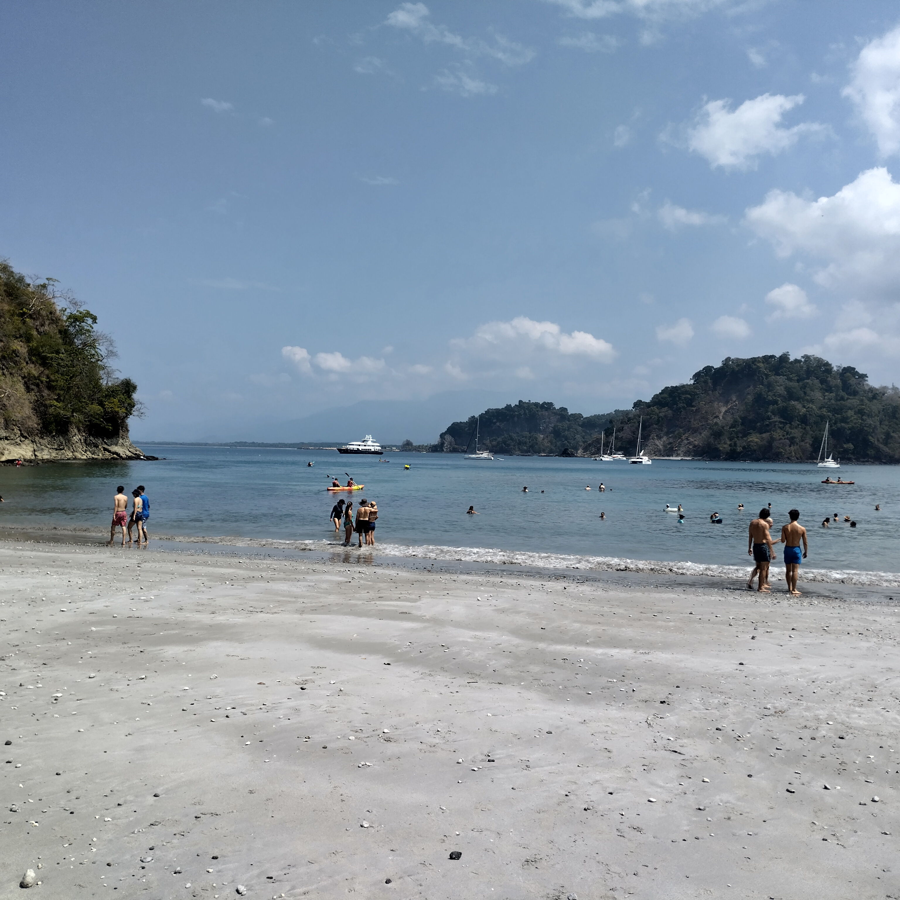
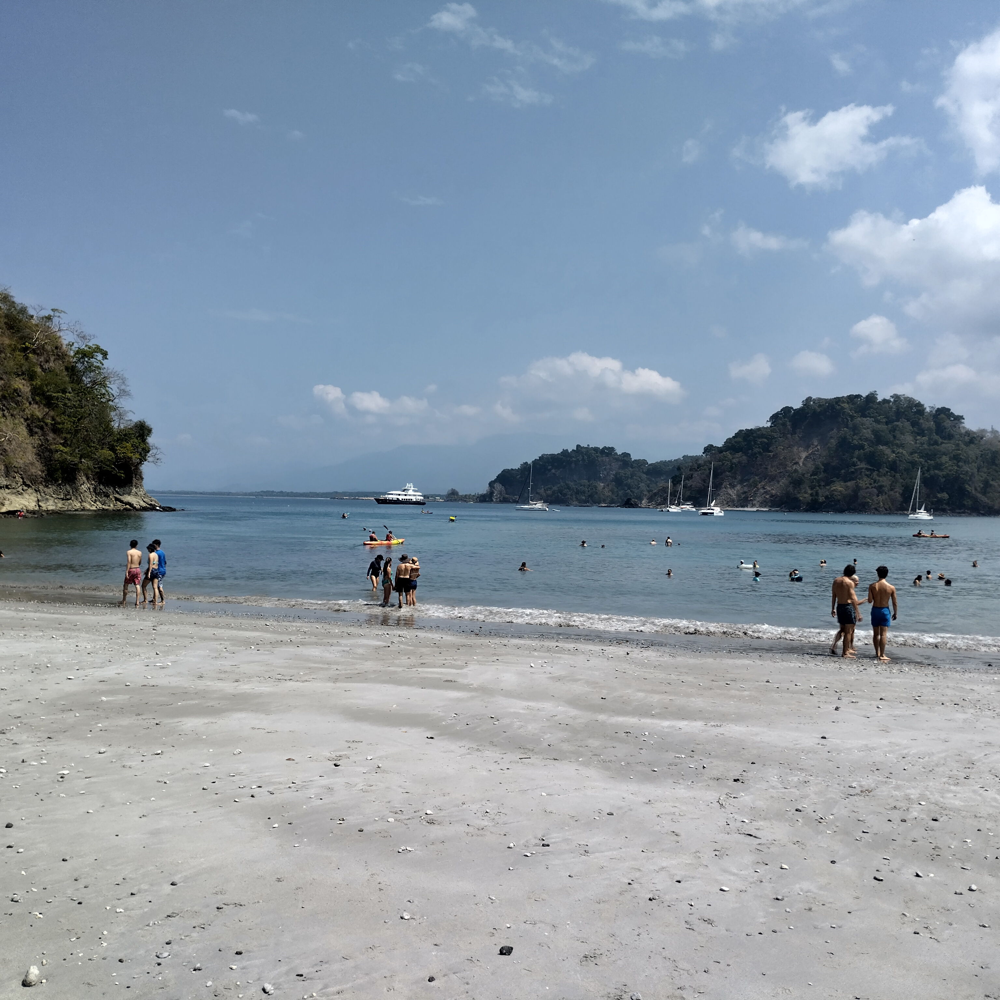

Galería


 

¿Cómo llegar?
Ubicado en la Cordillera de Tilarán, el acceso es una experiencia:
- Desde San José: Ruta 1 hasta Sardinal, luego ruta 606 (4h)
- Transporte público: Buses directos desde San José (Empresa Tralapa)
- Recomendación: Vehículo 4x4 en época lluviosa (mayo-noviembre)
Lo que debes saber
Clima
Fresco todo el año (15-25°C). Lleva capa impermeable, el bosque nuboso es húmedo.
Atracciones
Reserva Monteverde, Selvatura Park, puentes colgantes, avistamiento de quetzales.
Biodiversidad
2.5% de la biodiversidad mundial: 400+ aves, 120+ reptiles/anfibios, 100+ mamíferos.
Tours
Guías expertos recomendados para ver fauna. Nocturnos diarios a las 5:30pm.